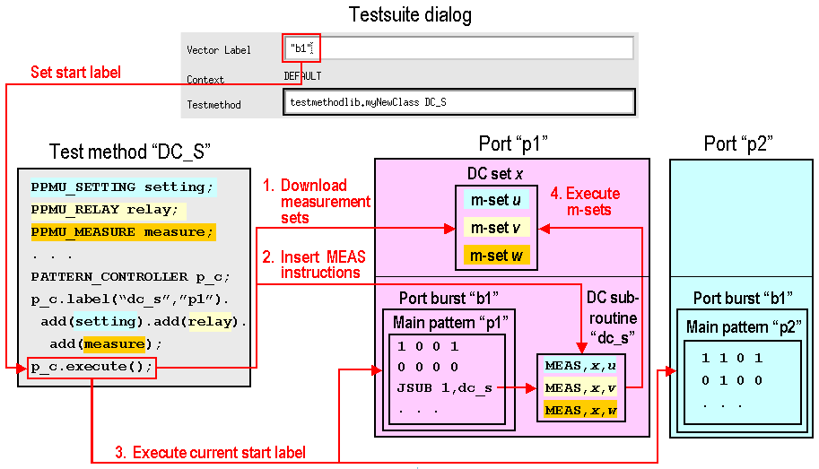

Simultaneous PPMU and Digital Test Implementation Basics
To be able to perform the DC (PPMU) and digital tests simultaneously, the following are required
- The PATTERN_CONTROLLER test method API, which:
- Downloads measurement sets defined in the PPMU_XXX APIs
- Inserts instructions into a predefined sub-pattern
- Executes the current primary sets
- The PATTERN Test Method API, which holds DC tasks for individual sub-patterns
- The MEAS instruction:
MEAS <dc_set>, <measurement_set>
which is a sequencer instruction for executing an already existing measurement set from within a pattern.
In addition:
- The pins for which the measurement set was defined must belong to the port associated with the pattern containing the MEAS instructions.
- Vectors following this instruction within the same pattern are executed without the need to restart the sequencers.
- Using a vector multi-port setup, the pattern containing the MEAS instructions can be executed in parallel with digital tests for other ports.
- The test method API's PATTERN_CONTROLLER and PATTERN simplify the creation of vector setups that execute the PPMU test.
The following figure shows the flow of execution for a DC sub-pattern in a multi-port setup:

The DC set numbers and the numbers of the measurement sets in the MEAS instructions depend on the previous test suites and are, therefore, represented by the place holders x and u,v,w, respectively.
Functional changes
- Introduced before SmarTest 6.3.2